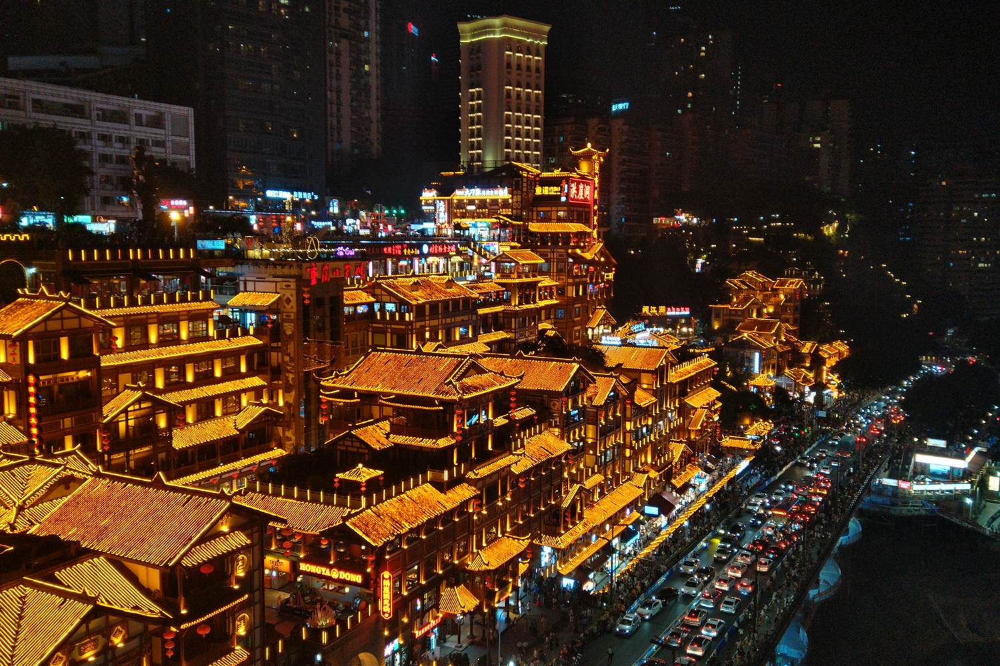

Scalo di andata · mezza giornata
Sabato 31 ottobre · atterraggio alle 05:00, ripartenza alle 15:15

Sulla carta sono dieci ore. In pratica sono quattro.
Non aspettarti la foto qui sopra. Hongyadong è famosa per le sue luci, e le luci sono uno spettacolo notturno: alle 06:15, quando arrivi in centro, sono già spente e il sole non è ancora sorto. Vedrai una struttura di legno interessante nella luce grigia del primo mattino, senza folla — che è comunque un buon affare, ma non è la cartolina.
| Ora | Cosa succede |
|---|---|
| 05:00 | Atterraggio. È il tuo primo ingresso in Cina: immigrazione, controlli, ritiro bagagli. |
| 06:15 | Fuori dall'aeroporto, verso la metro. Ancora buio pieno. |
| 07:00 | Jiefangbei. Metro linea 10 poi linea 3, circa 45 minuti. |
| 07:05 | Alba. Da qui comincia il tempo utile. |
| 11:00 | Ultima cosa in città, poi si torna verso l'aeroporto. |
| 13:15 | In aeroporto, con margine. |
| 15:15 | Volo per Pechino. |
Alba alle 07:05, tramonto alle 18:08. Medie di novembre: 14–20°, umido e con il cielo bianco tipico della città sul fiume.
La valigia esce dal nastro anche col biglietto unico. Chongqing è il punto di ingresso nel paese: dogana e immigrazione si fanno qui, quindi il bagaglio va ritirato e poi reimbarcato. Il check-in del volo interno apre poche ore prima delle 15:15, quindi non puoi consegnarla al mattino: per girare la città serve il deposito bagagli in aeroporto.
Cercalo prima di uscire, non dopo: è la differenza tra una mattina in città e una mattina con la valigia al seguito nella metropolitana.
Quattro ore bastano per tre cose fatte bene. Non per cinque.
Ci arrivi che è quasi buio e non c'è nessuno: è il vantaggio di un volo notturno. Il complesso è costruito addosso alla parete rocciosa su più piani, e la terrazza guarda il punto in cui il Jialing entra nel Yangtze.
La linea 2 passa dentro un edificio di appartamenti, con la fermata ricavata ai piani intermedi. Dura pochi secondi ed è una delle cose più strane che vedrai in Cina. C'è un punto di osservazione dal basso, ma passarci sopra costa solo il biglietto della metro.
La colazione della città sono noodles piccanti in brodo, mangiati su sgabelli bassi in strada. Alle sette del mattino i banchi sono aperti e pieni di gente che va a lavorare: è il momento più autentico dell'intera mattinata.
La città è verticale e costruita su colline: le distanze sulla mappa mentono, e quello che sembra vicino può essere trenta metri più in alto. Con quattro ore, meglio tre cose in un raggio breve che un elenco ambizioso.
Chongqing è la capitale del piccante, ma alle sette del mattino il menù è quello che è.
Il piatto locale per eccellenza: noodles sottili in un brodo rosso di olio di peperoncino, pepe di Sichuan, arachidi e senape sott'aceto. Si ordina indicando la ciotola del vicino. Puoi chiedere meno peperoncino, ma qui «meno» è relativo.
Spaghetti trasparenti e gommosi in brodo acido e piccante. Da banchetto, veloce, e più digeribile dei noodles se lo stomaco è ancora sul fuso orario italiano.
Chongqing è il posto dove è nato l'hotpot piccante: pentola divisa, olio di peperoncino, budella e verdure che cuociono al tavolo. Ma è una cena, non una colazione, e a mezzogiorno sei già in viaggio verso l'aeroporto. Rimandalo a Chengdu, dove hai tre notti — è la stessa scuola.
Questa nota resta solo su questo dispositivo. Vive nella memoria di questo browser, non passa da nessun server e non la ritrovi da un altro telefono. Se cancelli i dati del browser, non c'è più.